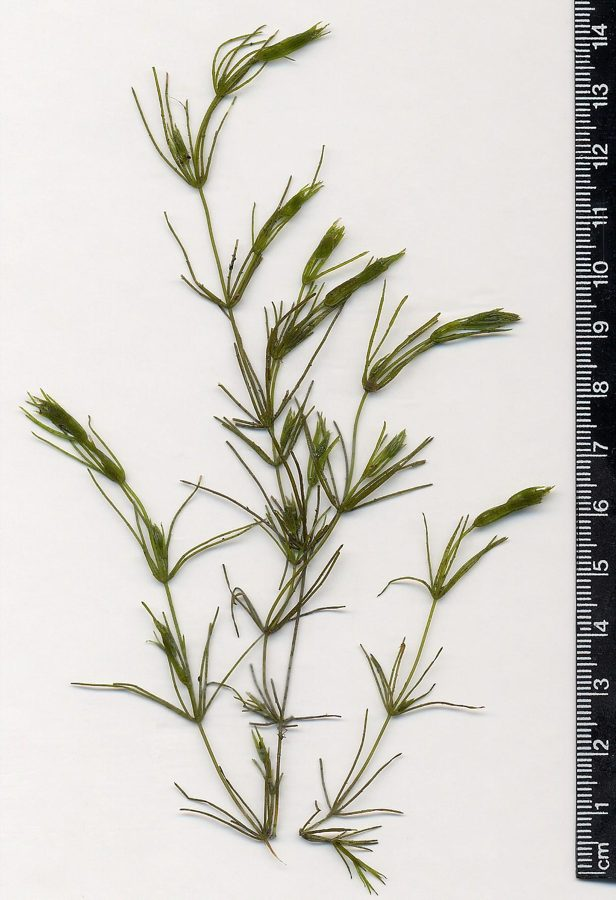

चारा शैवालStonewort
Chara · Characeae · FLR-0187

- Scientific name वैज्ञानिक नाम
- Chara L.
- Family कुल
- Characeae
- Hindi हिंदी
- चारा शैवाल
- Local names स्थानीय नाम
- chara, stonewort, chara shaival, kai
- Status here यहाँ की स्थिति
- native
- Movement आवागमन
- Resident, here all year
- IUCN IUCN
- not evaluated
- Review समीक्षा
- audited and independently read
When to look कब देखें
Expected mainly in June, July, August, September, October, November, December, January, February, March. मुख्यतः जून, जुलाई, अगस्त, सितंबर, अक्टूबर, नवंबर, दिसंबर, जनवरी, फ़रवरी, मार्च में अपेक्षित।
Uses and possibilities उपयोग और संभावनाएँ
“Traditional medicine” means a documented traditional use, not a claim that it works. Nothing on this page is medical advice.
Drawn from the documented uses in the profile below, where each is labelled traditional, current or a research lead. All uses →
चारा शैवाल / Stonewort
Chara L. (genus) — Characeae
चारा शैवाल — तालाब की तली पर की हरी, कड़ी, विचित्र जिनसे जुड़ी वनस्पति। ये शैवाल नहीं, पर शैवाल और पौधों के बीच की चीज़ — बहुत आदिम पौधे हैं। हरे, कड़े, खुरदुरे लगते हैं। तालाब को साफ रखते हैं, मछलियों का भोजन देते हैं। लिम पत्थर (कैल्सियम) बहुत जमा होता है इसकी पत्तियों पर — इसीलिए नाम "पत्थर का शैवाल" (stonewort)। पूर्वी उत्तर प्रदेश के हर क्षारीय तालाब में चारा होता है।
Quick Identification त्वरित पहचान
| Feature | Description |
|---|---|
| Overall form | Branched, plant-like filaments; 10–40 cm tall |
| Main axis | Central stem (primary axis) with whorled branches |
| Branches | Whorl of branches (6–8 per node) arranged regularly along stem; each branch bears branchlets |
| Colour | Bright green; often coated with white calcareous deposits (lime coating) |
| Texture | Rigid, slightly brittle; gritty to the touch due to mineral coating |
| Smell | Distinctive earthy or musty odour (from volatile organic compounds) |
| Habitat | Submerged in freshwater; rooted to bottom; occurs in patches or meadows |
Field tip: Stonewort is identified by its plant-like branched form with whorled branches arranged regularly along a central axis, combined with its stiff, brittle feel and white mineral coating. The distinctive earthy smell and the regular X-shaped or branched structure (visible when held up to light) are diagnostic. Any algal growth that looks like a tiny plant with regularly arranged branches in freshwater is likely Chara.
हिंदी: तालाब में गहरा, हरा, कड़ा पौधा जैसा शैवाल। सफेद परत चढ़ी होती है। सीधा, डालियाँ नियमित होती हैं।
Morphology आकारिकी
| Feature | Measurement |
|---|---|
| Height (thallus) | 10–40 cm |
| Node diameter | 1–3 mm |
| Main axis cell length | 500–2000 µm |
| Branchlet length | 5–15 mm |
| Spore (oospore) diameter | 600–900 µm |
Thallus structure: Chara exhibits a differentiated body plan unique among algae — approaching that of primitive land plants. The thallus is composed of:
- Main axis (primary stem): An unbranched central column of large cells joined end-to-end; each cell is 500–2000 µm long
- Nodes: Regions where branches originate; each node typically bears 6–8 branches arranged in a whorl (circular arrangement)
- Branches (secondary axes): Arise from nodes; each branch is smaller than the main axis and may be indeterminate (continuing to grow) or determinate (fixed length)
- Branchlets: Fine, hair-like structures arising from branch nodes; typically 5–15 mm long; bear the reproductive organs
Mineral coating: The outer cell walls accumulate calcium carbonate (CaCO₃) and magnesium carbonate deposits, forming a white gritty coating that gives the plant its rigidity and distinctive appearance. This coating is responsible for the name "stonewort" — the plant feels and looks encrusted with stone or lime.
Chloroplasts: Contain chlorophyll a and b; colour varies from bright green (low mineral coating) to pale green or whitish (heavy coating).
Colour: Bright green when young; becomes paler as calcareous deposits accumulate.
Rhizoids: Root-like structures arising from the basal node; these anchor the plant to the substrate and absorb nutrients, but lack the specialized tissue of true roots.
Sexual organs (visible under microscope):
- Antheridia (male): Shield-shaped or globular structures; bright orange-red in mature state
- Oogonia (female): Spiral, flask-shaped; surrounded by 5 cell layers (crown cells)
हिंदी: मुख्य तने पर नियमित डालियाँ। सफेद खनिज की परत। हरा, पर कड़ा।
Ecological Role पारिस्थितिक भूमिका
Aquatic plant community engineer: Chara forms dense "meadows" in suitable habitat; these meadows:
- Water oxygenation: Photosynthesis releases oxygen into water; supports aquatic animal respiration
- Sediment stabilization: Dense growth traps fine sediment particles; reduces water turbidity
- Habitat provision: Complex branched structure provides shelter and food for fish, invertebrates, and waterfowl; amphibian tadpoles feed on branchlets
- Nutrient absorption: Rapidly absorbs excess nutrients (nitrogen, phosphorus) from water; reduces eutrophication risk
- Food web foundation: Branchlets and entire plant tissue consumed by aquatic herbivores (snails, crustaceans, fish)
Water quality indicator: Chara abundance indicates:
- Clean, clear water (not turbid)
- Moderate nutrient levels (not severely eutrophic)
- Neutral to alkaline pH
- Presence of dissolved minerals (calcium, magnesium)
- Absence of heavy metal pollution
Evolutionary significance: Chara is phylogenetically the closest living relative of land plants; fossil evidence suggests charophytes were the ancestors of terrestrial vegetation. Studying Chara provides insight into the transition from aquatic to terrestrial life.
Life Cycle / Phenology जीवन चक्र
- Vegetative growth: Year-round in water; growth accelerates in monsoon and post-monsoon when water depth and nutrient availability are highest
- Peak growth season: July–October (monsoon to early winter) in eastern UP
- Sexual reproduction: Occurs in late monsoon to winter; antheridia and oogonia mature
- Oospore (resting spore): Thick-walled zygote; survives desiccation and low temperature; allows Chara to persist during dry season when ponds drain
- Oospore germination: Upon re-wetting and adequate temperature; oospore germinates into new thallus
- Asexual reproduction: Vegetative fragmentation; broken pieces of thallus can regrow into new plants
- Dormancy: In dry season, oospores remain viable in dried pond mud; population reconstitutes following monsoon rains
Associated Species / Interactions संबंधित प्रजातियाँ
- Fish and aquatic fauna: Many fish species (particularly cyprinids and catfish) feed on Chara branchlets and entire plant tissue
- Aquatic insects: Larvae of dragonflies, mayflies, and caddisflies shelter within the plant structure
- Snails and crustaceans: Graze directly on plant tissue and associated algal films
- Waterfowl: Ducks and water birds consume Chara leaves and rhizoids
- Other algae: Smaller algae (diatoms, green algae) grow epiphytically on Chara surface
- Associated macrophytes: Chara co-occurs with Azolla, Marsilea, Hydrilla, and other aquatic macrophytes
Agricultural / Human Relevance कृषि प्रासंगिकता
Water quality maintenance:
In fish ponds and water reservoirs, Chara is valued for:
- Natural water purification: Absorbs excess nutrients; reduces algal blooms and eutrophication
- Oxygen production: Photosynthesis produces oxygen, improving water quality for fish
- Sediment stabilization: Reduces water turbidity; allows light penetration
- Integrated aquaculture: In fish-farming systems, Chara beds increase fish health and reduce disease incidence
Animal feed:
- Fish forage: In traditional and integrated aquaculture, Chara is intentionally maintained or harvested as fodder for cultured fish
- Livestock forage: Dried or fresh Chara is occasionally used as animal feed, though nutritional data are limited
Traditional and contemporary uses:
- Compost: Harvested Chara can be composted; adds minerals (calcium) and organic matter to soil
- Cosmetic/traditional medicine: In some traditional systems, Chara is mentioned for skin treatments (unverified); the high mineral content may have historical basis
- Aquascaping: Popular in home aquaria for its aesthetic plant-like appearance and water-cleaning properties
Cultural significance:
In eastern UP, Chara is recognized as an indicator of pond health. The presence of abundant Chara signals clean water suitable for fish and drinking (though modern water treatment is preferred).
हिंदी: तालाब को साफ रखता है। मछलियों का भोजन। खाद बन सकता है।
Expected Locally स्थानीय रूप से अपेक्षित
Not a field record. Written from published accounts for eastern Uttar Pradesh. No confirmed local sighting yet — if you have seen it, that is what the atlas needs.
अभी तक स्थानीय पुष्टि नहीं। यह विवरण प्रकाशित स्रोतों से है, किसी अवलोकन से नहीं।
Stonewort genus (Chara) is expected in Basti and Ayodhya districts in freshwater ponds, tanks, shallow lakes, and seasonal water bodies, particularly those with neutral to alkaline pH and low pollution. The plants should be visible as green, plant-like growths on the pond bottom, particularly during monsoon to winter months (July–March). A first confirmed local record would require identification of specimens to genus level (noting the whorled branch arrangement, main axis structure, and calcareous coating), with documentation of site characteristics (pond name, depth, pH if possible), and date recorded.
Distribution वितरण
Global range: Cosmopolitan; found on every continent in freshwater habitats with suitable pH and temperature.
In India: Widespread in freshwater systems throughout the country; particularly abundant in alkaline water bodies (lakes, ponds) of the Indo-Gangetic plain and Deccan.
In Uttar Pradesh: Common in ponds and shallow lakes throughout the state; particularly abundant in districts with alkaline groundwater.
In Basti district / eastern UP: Expected in village ponds (talab), rice-field water bodies, and shallow lakes, particularly those with moderate to high calcium content.
Research Questions शोध प्रश्न
- What species of Chara are present in Basti district ponds, and how do they correlate with pond pH, calcium content, and fish productivity? — Specimen collection; morphological identification; water chemistry analysis; fish catch records.
- Does the presence and abundance of Chara in village ponds correlate with improved fish yields compared to ponds without Chara? — Survey 10 ponds with and without Chara; compare fish production.
- Can Chara biomass from harvested pond material be dried and used as a low-cost livestock feed supplement or soil amendment? — Nutritional analysis; feeding trial.
- Does Chara presence reduce the incidence of fish diseases in traditionally-managed village ponds? — Survey of fish health and disease in Chara-present vs. absent ponds.
- How do Chara oospore banks (in dried pond mud) affect population recovery following monsoon flooding? — Seasonal sampling of pond sediment; germination trials.
Similar Species मिलती-जुलती प्रजातियाँ
| Species | How to tell apart | हिंदी |
|---|---|---|
| Nitella (related alga) | Finer, more delicate; lacks the white calcareous coating; smoother texture | ठीक सी, कोमल |
| Hydrilla (aquatic plant) | True plant with roots and vascular tissue; leaves arranged differently; not calcified | सरल पत्तियाँ, मुलायम |
| Azolla (aquatic fern) | Tiny floating fern; no branched plant-like structure; reddish colour | छोटा, तैरता हुआ |
Field rule: A submerged aquatic growth that is plant-like with regularly whorled branches, stiff and brittle, and encrusted with white deposits is Chara (stonewort).
Taxonomy & Classification वर्गीकरण
Original description. The genus Chara was established by Carl Linnaeus in 1753 in Species Plantarum, vol. 2, p. 1156. The type species is Chara vulgaris L. The genus name Chara is of uncertain etymology; possibly from Greek khara (a gap or chasm), but the connection is unclear.
Genus-level profile note: This profile treats Chara at the genus level rather than species level (flag G in the CSV) because the precise species composition in eastern UP wetlands is not clearly documented. The genus Chara contains approximately 400 recognized species, with significant morphological and ecological diversity. Local surveys are needed to identify the specific species present in Basti district. The genus-level treatment is appropriate for a biodiversity atlas when species-level identification requires expert molecular or detailed comparative morphological work.
Subspecies: Not applicable; genus-level treatment.
Family and order placement: Order Charales, family Characeae. Characeae is a family of branched charophytes with the characteristic thallus structure described above.
Phylogenetic notes: Chara and closely related genera (Nitella, Tolypella) form a monophyletic group within Charales. Molecular phylogenetics places Charales as the sister group to all land plants (Embryophyta), making Chara extremely important for understanding plant evolution.
IUCN status rationale: Not evaluated. The genus is widespread and abundant in suitable habitat. However, local populations are vulnerable to water pollution, eutrophication, and water body destruction.
Photo Gallery फोटो गैलरी
Photos needed आवश्यक फोटो
- [ ] Whole plant showing branched structure (पूरा पौधा)
- [ ] Close-up of whorled branches (डालियाँ)
- [ ] White calcareous coating (सफेद परत)
- [ ] Growing in pond habitat (तालाब में)
- [ ] Microscopy of antheridia and oogonia (प्रजनन अंग)
No photos yet — add field photos to media/species/chara/ and run node scripts/sync_photos.js.
References संदर्भ
- Linnaeus, C. (1753). Species Plantarum, vol. 2, p. 1156. Laurentii Salvii, Holmiae. [original description]
- Wood, R.D. & Imahori, K. (1965). A Revision of the Characeae. Verlag J. Cramer, Weinheim. [comprehensive monograph]
- Krause, W. (1997). Charales: Characeae. In: Süßwasserflora von Mitteleuropa 18. Gustav Fischer, Stuttgart. [European treatment]
- Rao, M.V. et al. (2001). Algae of India. Botanical Survey of India, Calcutta. [Indian context]
- Botanical Survey of India (1998). Flora of Uttar Pradesh, Vol. 1 (Algae). BSI, Calcutta. [local distribution reference]
- GBIF Occurrence Data — Chara genus, India (2026).
Source file: species/lower_plants/algae/chara.md